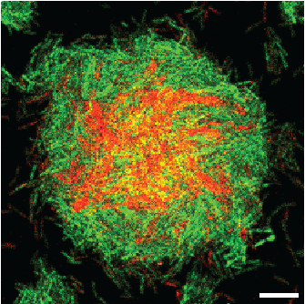

Bacterial biofilm development
Within bacterial biofilms, individual cells build highly structured three-dimensional communities by responding to external environmental signals, adopting heterogeneous behaviors, and coordinating different modes of motility. We focuse on the molecular mechanisms underlying single-cell heterogeneous activation of second-messenger signaling pathways (c-di-GMP and cAMP) across the stages of biofilm development, dissecting their roles in antibiotic resistance and pathogenesis, and developing anti-biofilm strategies aimed at these environmental-response mechanisms.
